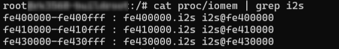
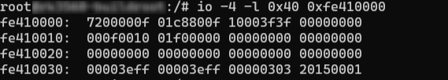
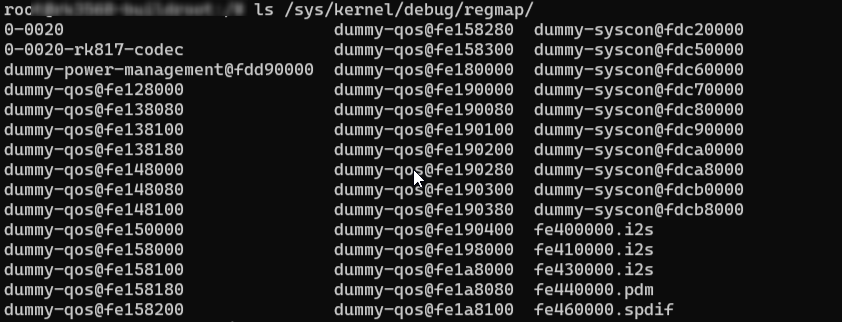
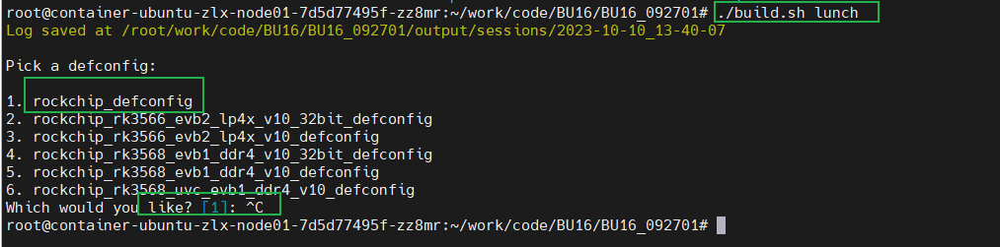
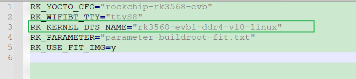

wiki挂载在GitHub上，国内访问较慢，目前仅作为个人wiki使用；
Linux-Kernel驱动调试
--- echo 0 > /proc/sys/kernel/sysrq 关闭 1开启 内核日志
DMESG
---dmesg指令打印的内容只与kernel相关，它的log源于内核缓冲区
//实时监控dmesg日志输出信息
[root@RedHat_test ~]# watch "dmesg | tail -20"
//输出dmesg至文档
dmesg > xx.log
==> exit后adb pull xx.log C:\Users\xxxxx
GPIO
//查看gpio信息
cd sys/kernel/debug
cat gpio
# 使能引脚GPIO1_C4
echo 52 > /sys/class/gpio/export
# 设置引脚为输入模式
echo in > /sys/class/gpio/gpio52/direction
# 读取引脚的值
cat /sys/class/gpio/gpio52/value
# 设置引脚为输出模式
echo out > /sys/class/gpio/gpio52/direction
# 设置引脚为低电平
echo 0 > /sys/class/gpio/gpio52/value
# 设置引脚为高电平
echo 1 > /sys/class/gpio/gpio52/value
# 复位引脚
echo 52 > /sys/class/gpio/unexport
GPIO被占用会报错，可能这个个引脚已被使用，需在设备树中自行查找
input事件
--- 查看linux下事件
# 查看总共有几个事件
ls /dev/input/
# 查看event对应的设备信息
cat /proc/bus/iio/devices
# 直接读取事件的输入
cat /dev/input/event4
# evtest
ADC
--- 一般ADC接口有两种：温度传感器，逐次逼近ADC
# TS-ADC(Temperature Sensor)：支持两通道，时钟频率必须低于800KHZ
# SAR-ADC(Successive Approximation Register)：支持六通道单端10位的SAR-ADC，时钟频率必须小于13MHZ。
# 获取所有的ADC值
cat /sys/bus/iio/devices/iio\:device0/in_voltage*_raw
==> 逐次逼近ADC：1.8v上拉，10位采样率，因此读出来的值为1024,实际电压计算公式：Vresult = (1800mv * 读出来的值) / 1023;
UART-串口
| 串口 | 功能 |
|---|---|
| TXD | 发送信号线 |
| RXD | 接受信号线 |
# 检查串口设备是否成功使能
ls /dev/tty*
FAN
# 查看风扇状态
cat /sys/class/thermal/cooling_device0/cur_state
I2C
# 查看i2c总线是否开启
ls /dev/i2c-*
I2C-TOOLS
--- 适用于挂载在I2C上的设备（例如某些挂载在i2c上的codec）
参数y：关闭交互模式，使用该参数时，不会提示警告信息。
参数a：扫描总线上的所有设备。
参数q：使用SMBus的“quick write”命令进行检测，不建议使用该参数。
参数r：使用SMBus的“receive byte”命令进行检测，不建议使用该参数。
- i2cdetect
# 检测当前系统有几组I2C总线
i2cdetect -l
# 查看指定I2C3总线的挂载情况
i2cdetect -a 3
i2cdetect -r 3
i2cdetect -y 3 //如显示i2c3的挂载情况
- i2cdump
# i2cdump 读取指定设备上的全部寄存器的值
i2cdump -y(自动执行yes) -f 0 0x30 //读取I2c0总线上0x30地址里面的数据
- i2cget
# 查询单个寄存器值
# 读取指定IIC设备的某个寄存器的值，如下读取I2C0地址为0x30器件中的0x01寄存器值。
i2cget -f -y 0 0x30 0x01
- i2cset
# 修改单个寄存器值
# 写入指定IIC设备的某个寄存器的值，如下设置I2C0地址为0x30器件中的0x01寄存器值为0x02；
i2cset -f -y 0 0x30 0x01 0x02
IO命令
--- 适合SOC寄存器查询
# 例如查询SOC上的I2S
cat proc/iomem | grep i2s
# 查询fe41000的寄存器值
io -4 -l 0x40 0xfe4100000
// -1|2|4 Sets memory access size in bytes (default byte)


regmap
ls /sys/kernel/debug/regmap/
cat /sys/kernel/debug/regmap/0-0020-rk817-codec/registers

SPI
| SPI | 功能 |
|---|---|
| MOSI | 主设备输出/从设备输入 |
| MISO | 主设备输入/从设备输出 |
| CLOCK | 时钟信号线 |
| CS0 | 片选信号线0 |
| CS1 | 片选信号线1 |
# 检查SPI设备
ls /dev/spi*
PWM设备
# 查看pwm是否开启
ls /sys/class/pwm/
示例：
pwm1->pwmchip1
pwm5->pwmchip2
pwm7->pwmchip3
==> 操作PWM
# 将指定pwm导出到用户空间
echo 0 > /sys/class/pwm/pwmchip1/export
# 设置pwm周期 单位为ns
echo 1000000 > /sys/class/pwm/pwmchip1/pwm0/period
# 设置占空比
echo 500000 > /sys/class/pwm/pwmchip1/pwm0/duty_cycle
# 设置pwm极性
echo "normal" > /sys/class/pwm/pwmchip1/pwm0/polarity
# 使能pwm
echo 1 > /sys/class/pwm/pwmchip1/pwm0/enable
# 取消将pwm3导出到用户空间
echo 0 > /sys/class/pwm/pwmchip1/unexport
Interrupts 中断信息
//查看Linux内核的中断信息
cat /proc/interrupts //这个主要是硬件中断信息
==>hp-det-gpio = <&gpio4 RK_PA4 GPIO_ACTIVE_LOW>; 耳机设置后会看到headset中断
中断号 CPU0 CPU1 CPU2 CPU3使用次数 中断名字
119: 0 0 0 0 rockchip_gpio_irq 4 Edge headset_detect
cat /proc/softirqs //软中断
cat /sys/kernel/irq/xxx //可以看到具体的中断信息
音频功能调试-Linux
--- Linux 使用alsa；Android使用tinyalsa
- Lingx 音频调试方法
# 查看当前已注册的声卡
cat /proc/asound/cards
# 查询音频时钟，确认时钟设置是否正确
cat /sys/kernel/debug/clk/clk_summary | egrep "i2s1|pll"
# 获取录音设备
aplay -l
# 获取录音设备
arecord -l
# 查看声卡驱动目录
ls /dev/snd/
# 列出可以控制card 1的控制器
amixer controls -c 1
# 列出所有card 1控制器能配置的值
amixer contents -c 1
# 查看声卡0控制器2的可配置的值
amixer -Dhw:0 cget numid=2
amixer -c 0 cget numid=2
# 设置声卡0控制2的值为3
amixer -Dhw:0 cset numid=2 3
amixer -c 0 cset numid=2 3
# 图形化查看当前信息
alsamixer
# 指定声卡0播放音频文件
aplay -D hw:0 test.wav
aplay -c 0 test.wav
# 使用声卡0，cd音质，录制10s
arecord -f cd -Dhw:1 -d 10 test.wav
# 使用card 1录制并使用card 1进行播放
sudo arecord -f cd -Dhw:1 | aplay -Dhw:1
-
后续补充alsaloop、play、pacmd、pluseaudio指令
-
-Dhw:0,0详解
- 第一位0是指定0声卡，第二位0是指定设备0；实际完整命令如：aplay -Dhw:0,0 test.wav；
-
-Dhw:0,0 和 -Dplughw:0,0的区别
-
hw：是直接访问硬件
-
plughw：是经过采样率和格式转换的插件
= =>如RK平台，录播都是仅支持2ch，如果直接使用hw:0,0播放mono文件则会报错：Channels count non available；只能使用stereo；
但是可以使用plughw:0,0的方式播放mono文件
- 录音也可以使用plughw:0的方式录制mono格式的音频
= => plughw:0 很好用
音频功能调试-Andorid
自定义log打印
/* Debug */
#if 1
#define DBG(x...) printk(x)
#else
#define DBG(x...) do { } while (0)
#endif
#ifdef CONFIG_SND_DEBUG
#define DBG(args...) pr_info(args)
#else
#define DBG(args...)
#endif
dtb反编译
# fdtdump工具
sudo apt-get install device-tree-complier
# 反编译
fdtdump xxx.dtc > xxx.dts
常用ADB命令整理
--- Android Debug Bridge（安卓调试桥）
-
连接/重启/安装/应用管理
adb devices # 多设备连接 adb devices adb -s 192.168.xxx.xxx shell # adb wifi adb tcpip 5555 //让设备端的 adbd 重启，并在 TCP 端口 5555 处监听 adb connect 192.168.xxx:5555 //远程连接设备，设备的 IP 地址是 192.168.xxx adb disconnect 192.168.xxx:5555 // 断开连接 # adb重新挂载 adb root adb remount # adb重启 adb reboot //普通重启 adb reboot recovery //重启到Recovery界面 adb reboot fastboot //重启到fastboot adb reboot bootloader //重启到bootloader adb reboot ed 重启到紧急下载（高通only） # 安装apk adb install xxx.apk 路径 adb install -r xxx.apk 路径 (强制安装) # 文件导出/上传 adb push xxx.txt 本地路径 adb pull xxx.txt 本地路径 # 截图导出 adb shell screencap /xxx.jpg //截图 adb pull xxx //导出 # 录制视频 adb shell screencord /xxx.mp4 # 查看CPU架构 adb shell getprop ro.product.cpu.abi # 屏幕常亮 adb shell settings put system screen_off_timeout 600000 -
Android-调试/Debug
--- adb logcat 安卓系统专用指令，打印内容只与应用程序相关，即只打印用户态log信息
# 常用 adb logcat > log.txt adb logcat -b(特定类型) kernel > k.txt adb logcat -b all -d(一次性输出后退出) >log.txt //这个好用，有一次性退出 adb shell logcat -b all > log.txt //kernel log # 实时查看音量级别 logcat | grep storeVolume # 实时输出 logcat -b all | grep input_report_key # 清空日志信息，适用于复现前清除无用log logcat -c radio：查看包含无线装置/电话相关信息的缓冲区 events：查看已经过解释的二进制系统事件缓冲区消息 main：查看系统日志缓冲区(默认) crash：查看崩溃日志缓冲区（默认） all：查看所有缓冲区 default：报告main、system、crash缓冲区
getprop/setprop/watchprops
--- 在Android系统中，使用getprop命令可以从系统中读取一些设备信息，属性的文件
-
getprop
# 从系统的配置中读取信息 adb shell getprop > p.txt (导出所有属性) getprop ro.build.type（看版本 Userdebug版本/UserD版本/熔断版本） getprop | grep efuse 熔断判断 getprop ro.build.fingerprint（特定事件） getprop persist.vendor.framebuffer.main(看分辨率) -
setprop
# setprop <prop-name> <value> //例如，修改进程默认分配的可以使用堆内存大小： adb shell setprop dalvik.vm.heapgrowthlimit 128m -
一些常用参数说明
dalvik.vm.heapgrowthlimit：默认给进程分配的可使用堆内存 dalvik.vm.heapsize：设置了android:largeHeap以后可使用的内存大小 ro.product.brand：手机品牌 ro.product.device：设备名称 ro.product.model：设备内部代号 ro.product.name：设备名称 ro.product.manufacturer：设备制造商 ro.serialno：设备序列号 ro.sf.lcd_density：设备屏幕密度 ro.config.ringtone：默认来电铃声 ro.config.notification_sound：默认通知铃声 ro.config.alarm_alert：默认闹钟铃声 dalvik.vm.stack-trace-file：trace文件放置目录
User版本开启ADB
-
Android
Z:\work\xxx\build\make\core\main.mk 修改：ro.debuggable=1 ro.adb.secure=0 diff --git a/core/main.mk b/core/main.mk index c5a0baeef..ab5b9e22a 100644 --- a/core/main.mk +++ b/core/main.mk @@ -393,7 +393,7 @@ ifneq (,$(user_variant)) ADDITIONAL_SYSTEM_PROPERTIES += security.perf_harden=1 ifeq ($(user_variant),user) - ADDITIONAL_SYSTEM_PROPERTIES += ro.adb.secure=1 + ADDITIONAL_SYSTEM_PROPERTIES += ro.adb.secure=0 endif ifeq ($(user_variant),userdebug) @@ -423,7 +423,7 @@ ifeq (true,$(strip $(enable_target_debugging))) ADDITIONAL_SYSTEM_PROPERTIES += dalvik.vm.lockprof.threshold=500 else # !enable_target_debugging # Target is less debuggable and adbd is off by default - ADDITIONAL_SYSTEM_PROPERTIES += ro.debuggable=0 + ADDITIONAL_SYSTEM_PROPERTIES += ro.debuggable=1 endif # !enable_target_debugging ## eng ##
Git/Gerrit平台
--- Git比svn好用
--- Gerrit一款开源免费的代码评审平台，基于GIT的版本控制系统，目前国内大多数公式均采用Gerrit平台进行代码评审/review管控。 ==> 项目主要使用该平台进行Merge审核。
Gerrit添加账号和密钥

- Gerrit的版本有时候不支持常用的RSA加密方式 --- 如在使用WSL2时，github可以正常拉取代码，gerrit会显示不识别，此时换一种更先进的加密方式，如ed25519格式的密钥，可以使得gerrit正常
Gerrit添加仓库和分支
1：联系管理员添加分支
2：添加仓库到manifest
- 拉manifest

3：修改相应分支仓库
- manifest\rk_manifests\include\rk_modules_repository_maiyun.xml

4：提交merge后，需重新init该仓库所在项目，而后再提交相关代码
Gerrit拉取代码
--- Gerrit拉取代码和github差不多
-
拉取代码

git clone "ssh链接"即可
-
repo init
repo init --repo-url=ssh://替换成自己@10.110.1.100:29418/repo --no-repo-verify --repo-branch=reponew -u ssh://替换成自己@10.110.1.100:29418/manifest.git -m rk_3568_manifests/rk3568_linux_bu16.xml出现and try again是正常的；
-
repo sync 即可
Gerrit 基线-同步/编译/提交/撤销/回退
-
同步代码
repo sync -c --no-tags -j32 //**--no-tags** don't fetch tags.该选项指定不获取服务器上的tag信息 -
清除、重置(丢弃分支)、同步
repo forall -c git clean -fd && repo forall -c git reset --hard && repo sync -c --no-tags # 解决repo问题 .repo/repo/repo forall -c git clean -fd && .repo/repo/repo forall -c git reset --hard && .repo/repo/repo sync -c --no-tags -
编译
//编译 source build/envsetup.sh lunch 40 ./build.sh -AUCKu -
提交
//代码提交 # 添加这两个文件 git add 文件名1 文件名2 # 添加所有文件 git add . # 添加已跟踪文件 git add -u . # 添加已跟踪和未跟踪的文件 git add -A . # 取消添加该文件 git reset HEAD+文件名//example # 添加所有changes文件 git add . git commit -m "[Project][Module]Add for xxx by xxx" # 查看分支 git branch -a * (HEAD detached from 984f637aa77e) remotes/m/master -> origin/a1 remotes/origin/a1 remotes/origin/master # 推送至a1分支上 git push origin HEAD:refs/for/a1 -
撤销
git reset --hard HEAD (撤销最新的提交) git reset --hard HEAD^ (撤销上一次提交) git reset --hard HEAD^^ (撤销上上一次提交) git reset --hard commit ID (commit ID指的是通过git log看到的commit后面的一长串ID的前7位) -
回退/恢复
git log git checkout -f 487de35b82fd72b78058b7c5efa34e9a59e0bb87 git reset --hard "xxxxxxxx"
Gerrit-本地分支-查看/创建/切换/重命名/删除
-
查看
# 查看本地分支 git branch # 查看远程分支 git branch -r # 查看所有分支 git branch -a -
创建
# 仅创建 git branch name（分支名） # 创建并直接切换至该分支 git checkout -b name(分支名) -
切换
git checkout name（分支名） -
重命名
# 重命名本地分支 git branch -m old_name new_name -
删除
# 删除本地分支 git branch -d name # 删除远程分支（小卡拉米用不到的） git push origin -delete :name
Gerrit-本地远程仓库对比
-
更新本地远程分支后与本地分支进行对比
# 更新本地远程分支 git fetch origin # 对比 git diff 本地分支 origin/xxx //只能看到diff内容 # 通过log查看区别 git log git log origin/xxxx
Git-切换分支同步修改
-
将当前分支修改放入一个新的Git分支
# 暂存 git stash # 创建新的分支 git checkout -b new-feature # 将暂存拉到新的分支 git stash apply
Git-解除本地分支冲突
-
保存修改文件和记录修改内容
-
通过git stash 解决冲突
# 暂存 git stash # pull 更新 git pull <remote> <branch> //这里可以检查下是否是最新的，可能要拉取下远程分支 # 还原暂存 git stash pop
Git stash的用法
-
git stash 暂存本地修改至缓存区
-
Git-stash pop 和 Git-stash apply的区别
# 查看保存的信息和标记 git stash list # 拉取方式 git stash pop //拉取最新的暂存区同时删除对应的stash list git stash apply //不删除对应的stash list # 删除多的list git stash drop //删除最新的list git stash claer //清除全部的stash -
指定stash list
# git stash list # git stash xxxx stash@{x}
Git-patch 打包/应用
-
打包
# 打包最近的一个log git format-patch -1 # 打包最近的两个log git format-patch -2 # 同理打包最近的n个log git format-patch -n # 打包n1、n2版本间的patch git format-patch -n1 -n2 # 打包从根到指定log的所有patch git format-patch --root 6a99bdd14b66de695519cca7a72d9b652e9bfdc7 # 将patch输出到指定文件 git format-patch xxx --stdout > xxx.patch ==> git format-patch -4 --stdout > 1.patch -
应用
# 合并指定log git am xxx.patch
Git-Fork/上传
-
Fork
git clone xxxx(ssh) -
上传自己本地仓库
rm -r .git //删除原有git信息 git init git add . git commit -m "xxxx" //提前在git官网新建repository git remote add origin 远程库地址(如：git push --set-upstream origin master) git push --set-upstream origin master
gitignore
-
忽视如out等文件 --- 在.git同目录下
touch .gitignore //生成gitignore文件 vim .gitignore //改下需要忽略的文件 .gitignore 文件本身可以忽略 -
权限引起的git status未显示变化，但是vscode等ide显示changes --- 忽略权限即可
项目修改：git config core.filemode false 全局修改：git config --global core.filemode false
Git/Gerrit/Repo-error
-
error: failed to push some refs to
# 本质是第一次提交缺失Readme文件，第一次初始提交问题，按照出错提示即可 example： gitdir=$(git rev-parse --git-dir); scp -p -P 29418 xxxx@10.110.1.100:hooks/commit-msg ${gitdir}/hooks/ git commit --amend --no-edit -
invalid syntax 使用项目自带的repo即可：.repo/repo/repo syncu
# 普通用户repo失效 mkdir -p ~/.bin PATH="${HOME}/.bin:${PATH}" curl https://storage.googleapis.com/git-repo-downloads/repo > ~/.bin/repo chmod a+rx ~/.bin/repo -
python版本错误
//2.0/3.0 pyhton版本的老问题了 # 查看当前默认python版本 python --version # 查看python3位置 whereis python3 # 删除原有python2软链接 rm /usr/bin/python # 链接3.x版本的软链接 ln -s /usr/bin/python3.x /usr/bin/python # 重新检查当前python版本 -
git status未显示改动，但是VSCODE显示changes --- 文件权限导致changes提升 = =》忽视文件权限即可
项目修改：git config core.filemode false 全局修改：git config --global core.filemode false
Linux
DTS - Device Tree Source
--- 纷繁芜杂，如星星点点；点清且明，如月映波光
概述
--- DTS是一种描述==硬件的数据结构==，起源于OF（OpenFirmware）；将驱动代码和设备硬件信息相互隔离；设备树对硬件信息进行抽象，驱动代码则负责逻辑处理 == 》 大量减少了内核当中的冗余代码；
- DTS：设备树的源文件，硬件的相应信息都在其中；
- 每一款硬件一般一个主控，==一个主控SOC对应一个DTS文件==
- DTSI：设备树头文件扩展名，相当于C语言的头文件；
- 一个SOC会对应多个设备，这些设备对于不同的SOC来说都是相同的，因此将这些==相同的DTS配置==抽象为一个.dtsi文件，SOC使用设备时，在DTS文件中包含该DTSI即可；
- DTSI一般用于描述SOC的内部外设信息，如CPU架构、主频、IIC、SPI、外设(Motor、Fan等)；
- ==相同节点的配置，dts中的配置会覆盖dtsi的配置，后编译的dtsi也会覆盖之前同节点的dtsi配置==，注意检查节点配置是否重复配置或默认配置先后顺序；
- DTC：DTS的编译工具，相当于众所周知的GCC；在内核源码scripts/dtc路径下已包含DTC相关工具
- DTB：DTS被DTC编译后的二进制格式设备树文件，才可被linux内核解析；
- DTB通过Bootloader引导加载到内核当中；
DTS框架
- Linux kernel设备树路径：
手动编译
./scripts/dtc/dtc -I dts -O dtb -o xxx.dtb arch/arm/boot/dts/xxx.dts // 编译 dts 为 dtb
./scripts/dtc/dtc -I dtb -O dts -o xxx.dts arch/arm/boot/dts/xxx.dtb // 反编译 dtb 为 dts
dts注意事项
1. 自行添加dts节点和代码的优势
--- 对于某些开发中常见的功能，可以改代码，使用dts的参数的方法；有利于后续调试仅修改dts参数，尽量解耦合；
2. 确定项目DTS所在的位置
--- 基于RK平台
方法一
- ./build.sh lunch 
- 查看对应的deconfig

- 查看细节 
- 在对应的dts文件里面找包含的DTS和DTSI即可
法二
-
进入output路径，打开.config

-
即可看到相应的dts

交叉编译
Android NDK交叉编译
--- 适用于Android平台，参考AS005文档
项目源码环境
--- 适用于Android平台，参考AS005文档
源码编译后的输出目录下进行环境编译
--- 适用于 Linux；应该也适用于android(未验证)
- Linux
一般会在buildroot/output/rockchip_rkxx/host下
- buildroot/output/rockchip_rkxx/host/bin 看编译版本
- 在buildroot/output/rockchip_rkxx/host/ 写源码 hello.c
- ./host/bin/arm-buildroot-linux-gnueabihf-gcc hello.c -o hello
- android 待后续验证补充
Android Sepolicy
简介
--- Android安全模型的一部分，一种权限管理策略，即使是进程具有root权限，SELinux也能通过创建⾃动化的安全策略(sepolicy)来限制特权进程来增强 Android的安全性 ；主要就是限制Android的权限，避免滥用造成的安全风险问题。
查看selinux的详情
-
ps -z --- 显示selinux的角色、类型、安全级别；格式：user：role：type：rank
ps -Z LABEL USER PID PPID NAME u:r:init:s0 root 1 0 /init u:r:kernel:s0 root 2 0 kthreadd ...- user；SEAndroid中定义了⼀个SELinux⽤户，值为u；
- role；role是⾓⾊之意，它是SELinux中⼀种⽐较⾼层次，⼀个u可以属于多个role，不 同的role具有不同的权限；
- init；代表该进程所属的Domain为init，是这个进程type，在andorid⾥⾯，定义了100多
- type；进程所属的类型；
- S0；是⼀个安全的等级MLS将系统的进程和⽂件进⾏了分级，不同级别的资源需要对应级别的进程 才能访问；
selinux 关键文件
-
政策文件
--- 文件格式：以*.te 文件结尾
--- 路径：/device/manufacturer/device-name/sepolicy
==> 一般尽可能的更新现有文件， 也可创建新的政策文件
-
上下文描述文件
- file_contexts：文件分配标签
- genfs_contexts：为不支持扩展属性的文件系统(proc、vfat)分配标签
- property_contexts：为Android系统属性分配标签，便于控制哪些进程可以设置这些属性
- service_contexts：Android Binder 服务分配标签，以便控制哪些进程可以为相应服务添加 （注册）和查找（查询）Binder 引⽤
- seapp_contexts：为应⽤进程和 /data/data ⽬录分配标签
- mac_permissions.xml：根据应⽤签名和应⽤软件包名称（后者可选）为应⽤分配 seinfo 标 记
-
BoardConfig.mk makefile
修改或添加政策⽂件和上下⽂的描述⽂件后，请更新您的 /device/rockchip/devicename/BoardConfig.mk BOARD_SEPOLICY_DIRS += \ <root>/device/rockchip/device-name/sepolicy (8.0+版本不需要修改以下⽂件) BOARD_SEPOLICY_UNION += \ genfs_contexts \ file_contexts \ sepolicy.te。
selinux 问题确认
- user版本相关功能不正常，userdebug版本功能正常，可能为selinux权限问题;
- kernel log、logcat中出现avc：denied字样log，需进一步复现确认是否为selinux权限问题;
-
selinux 权限开启/关闭
adb shell setenforce 0 setenforce 0 设置SELinux 成为permissive模式 临时关闭selinux setenforce 1 临时打开selinux -
selinux 相关log抓取
adb shell logcat | grep avc 或 ad b shell dmesg | grep avc
sepolicy rule 读法/添加/验证
-
selinux log读法/添加 --- 一般缺少search、write、read权限都如下：
01-01 00:07:51.030 4006 4006 W android.hardwar: type=1400 audit(0.0:763): avc: denied { search } for name="leds" dev="sysfs" ino=20167 scontext=u:r:hal_vibrator_default:s0 tcontext=u:object_r:sysfs_leds:s0 tclass=dir permissive=0 1. 缺少 search 权限 2. hal_vibrator_default 缺少权限 3. sysfs_leds 这个节点缺少权限 4. dir 类型文件 如上；需添加：allow hal_vibrator_default sysfs_leds:dir search----：
-
权限问题一般不能一次性解决，可能会在一次权限问题解决后再提示下一个权限问题，需一次次给予新的权限；
-
当需要加入很多权限时，推荐采用宏的方式添加
allow hal_vibrator_default sysfs_leds:dir {search write add_name create }；
-
-
selinux 添加
-
法一
如上：allow hal_vibrator_default sysfs_leds:dir search==>：
将对应的policy添加到te文件中；⼀般添加在 /device/
/common/sepolicy 或者 /device/ /$DEVICE/sepolicy ⽬录下，具体哪个⽬录，请执⾏get_build_var 查看 -
法二 --- 使用audit2allow ⼯具⽣成对应的 policy 规则；暂未使用过
-
-
修改生效：重新编译烧录抓log检查
案例：Motor驱动
1：userdebug：会上报avc问题，但permission=1仅上报不阻止
user：上报avc问题，permission=0，阻止；需给相关avc权限

- avc问题读法
01-01 00:07:51.030 4006 4006 W android.hardwar: type=1400 audit(0.0:763): avc: denied { search } for name="leds" dev="sysfs" ino=20167 scontext=u:r:hal_vibrator_default:s0 tcontext=u:object_r:sysfs_leds:s0 tclass=dir permissive=0
如上：需添加allow hal_vibrator_default sysfs_leds:dir search
2：解决方案
MaiYun\device\rockchip\common\sepolicy\vendor目录下无hal_vibrator_default.te相关文件
但MaiYun\device\rockchip\common\sepolicy\vendor\file_contexts下有vibrator_aidl描述;

- 直接添加hal_vibrator_hal.te文件并添加所需allow

经修改后解决user版本无vibrator相关avc错误；userdebug仍有部分vibrator相关avc错误，如需解决，增加相关权限即可。 如还有selinux相关问题则参考：RK-Android Sepolicy配置指导。
==> 补充： AIDL、HIDL都是用于跨进程通信；将上层与底层分隔开
AIDL：Android Interface Definition Language(Android接口定义语言)
HIDL：Hardware Abstract Layer --- HIDL 则是改变之前上层直接调用 HAL 层的模式，而是将 HAL 层作为一个服务启动，当上层需要调用时是作为 client 来请求服务的
u-boot
参考自：[U-Boot 之八 详解 Driver Model 架构、配置、命令、初始化流程_u_boot_driver_ZC·Shou的博客-CSDN博客](https://blog.csdn.net/ZCShouCSDN/article/details/128600865#:~:text=U-Boot 的 DM 使用 uclass 和,udevice 这两个抽象的类来管理所有的设备驱动，这两个抽象类分别各自对应 uclass_driver 和 driver 。)
-
u-boot 的设备树和kernel共用一套；目前均采用设备树的方式配置
-
u-boot的config不共用，一般在：u-boot\configs\xxxx_defconfig下
-
目前u-boot引用自己的Driver Mode（官方简称 DM）驱动架构
---需开启CONFIG_DM_GPIO=y 宏和相关器件的宏
-
u-boot 最主要的两个宏：
UCLASS_DRIVER(__name) ==> uclass U_BOOT_DRIVER(__name) ==> udevice --- 初始化中，u-boot会遍历这些节区，然后进行内容匹配，依次创建各种设备和对应的UCLASS
==》 只有driver存在时，才会创建uclass
uclass
是根据uclass_driver动态创建的。
u-boot参数--cmdline
--- cmdline 由多个数据拼接而成，将重复数据过滤后再传给kernel； --- cmdline 是uboot引导内核启动时传给内核的，作用是指导内核启动；内核启动阶段会去解析cmdline，按照cmdline去指导内核启动
-
查询cmdlie
cat proc/cmdline
-
cmdline 参数说明
DMA Direct Memory Access
--- DMA传输将数据从一个地址空间复制到另一个地址空间，提供在外设和存储器之间或者存储器和存储器之间的高速数据传输
简单来讲：
主要是选择普通模式还是循环模式
111s
ss